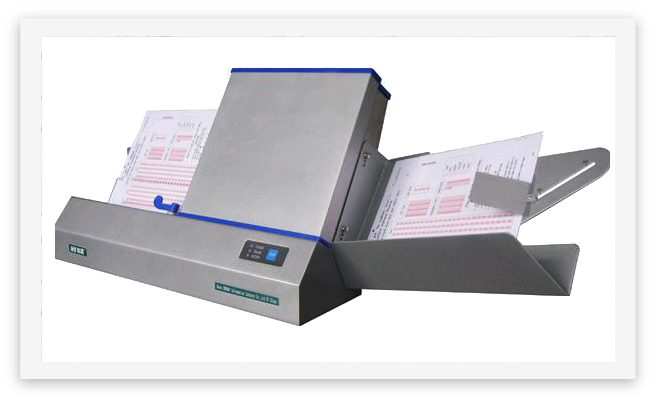

Production Data Quality
A System for Testing and Improving Production Data Capture Quality
 Once a large and complex forms processing data capture system is up and running in production mode, it is difficult, costly and time-consuming to test the quality of the data being captured, and so such testing is often done poorly or not at all. Further, it is necessary to do data quality testing if continuous improvements are to be made to the system.
Once a large and complex forms processing data capture system is up and running in production mode, it is difficult, costly and time-consuming to test the quality of the data being captured, and so such testing is often done poorly or not at all. Further, it is necessary to do data quality testing if continuous improvements are to be made to the system.
In our work with the U. S. Census Bureau since 1994, we have developed a powerful software tool to quickly accomplish this testing with very high precision and at low cost. We refer to this tool as Production Data Quality (PDQ), and it produces a very high quality truth of the production data being sampled, which is then used to calculate the actual production data’s accuracy.
PDQ Description
The PDQ system contains an independent recognition subsystem that samples production images and data, and creates a provisional truth file. This provisional truth file is then compared to the actual production data file, at which time over 95% of the data’s truth is automatically established. The remainder of the unresolved data is then examined through a convenient user interface to efficiently create the final truth file at 1/40th the cost of conventional manual methods.
 A unique feature of PDQ is the easy-to-use dashboard, with which one can instantly see where errors are occurring in the data capture system, and readily drill down step-wise (even to the original image snippet) to determine the root cause of the errors. Once the root cause of an error is shown, it becomes an easy matter to resolve the problem, and make a system improvement. Continued testing in this manner will verify that the improvement has been made successfully, and enable continuous improvement.
A unique feature of PDQ is the easy-to-use dashboard, with which one can instantly see where errors are occurring in the data capture system, and readily drill down step-wise (even to the original image snippet) to determine the root cause of the errors. Once the root cause of an error is shown, it becomes an easy matter to resolve the problem, and make a system improvement. Continued testing in this manner will verify that the improvement has been made successfully, and enable continuous improvement.
 ADI has successfully performed quality assurance testing for the Census Bureau for both questionnaire printing and electronic data capture in the 2010 Decennial Census.
ADI has successfully performed quality assurance testing for the Census Bureau for both questionnaire printing and electronic data capture in the 2010 Decennial Census.